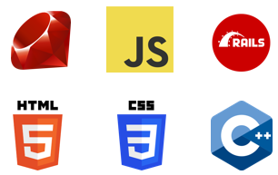

Hi, I'm Emma ...
In this section, I present a comprehensive overview of my extracurricular activities and qualifications, thoughtfully organized to highlight their relevance and significance in showcasing my diverse skill set and experiences.
About Me
Hi, I'm Emma, a recent graduate in Mechatronics and Robotics embarking on a journey into the dynamic world of web development. With experiences at Ottobock, Infineon, and Thonet, I've honed my skills and passion for creating innovative solutions. Currently enrolled in a web development bootcamp, I'm immersing myself in the realms of HTML, CSS, and JavaScript. Beyond the classroom, I've delved into the industry with Ottobock and Infineon, gaining practical insights. Eager to expand my horizons. Whether it's crafting a website from scratch or enhancing an existing one, let's connect and explore the possibilities together! ... a Mechatronics and Robotics grad sculpting my path through tech's exciting landscapes, blending learning with hands-on experiences and a touch of creative flair.
Tech Stack
Programming Languages
Tools
Projects

AirBnb Project
Some quick example text to build on the card title and make up the bulk of the card's content.
WasteWise
Some quick example text to build on the card title and make up the bulk of the card's content.
History Odyssey
Some quick example text to build on the card title and make up the bulk of the card's content.
Passions
- I am especially passionate about social engagement,
- learning and continued education as well as
- technology and innovation.
Hobbies
- My hobbies are bouldering,
- skiing
- and football.